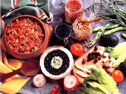

Issue # 120 - November/December 1989
KITCHEN GARDEN
A type for every taste.
THE WORLD HAS BEEN BLESSED with beans. There are more than 500 cultivated varieties, with origins as diverse as Japan, India, Central America, and the Mediterranean. Botanically speaking, the greatest number of bean varieties belong to the genus Phaseolus, which includes green and wax beans (covered in issue No. 118), as well as kidney, pinto, and lima beans. Mung beans and adzuki beans, however, belong to the genus Vigna; fava beans are classed as Vicia faba, garbanzos as Cicer arietinum; and the soybean has the botanical name of Gly cine max. A shell bean can be considered as any bean grown for the bean itself-the seed-rather than the pod.
With such diverse choices, it can be exceedingly rewarding to grow shell beans you might not have tried before. (Check with your county extension agent to find out if a particular variety will do well in your area.) Here are a few favorites:
Adzuki beans, natives of Japan, feature small plants with long, thin pods that when young can be eaten like snap beans. Each pod contains seven to 10 small, nutty-tasting, maroon-colored seeds, which require a lot of shelling but are extremely high in protein and are excellent fresh or dried. (In Asia, they are often used in desserts.) Adzukis require a three-month growing season,but they are resistant to pests, even Mexican bean beetles.
Black beans (also called black turtle beans) were a staple of the Inca and Aztec diets and-combined with rice-are still a favorite in parts of Central and South America. Because black beans need 85 to 105 warm, frost-free days to mature, they are popular in the South, where they are eaten mainly in soups and stews. These jet black seeds come from sprawling half-runner-type plants, but some newer varieties, such as Johnny's Midnight Black Turtle Soup, have more upright growth habits.
Garbanzo beans (also known as chickpeas) are nutty-tasting dry beans that can be baked, though I prefer them cooked and chilled for use in salads. Unfortunately, these bushy plants, which need 65 to 100 days to produce a harvest, don't do well in cooler climates.
Fava beans (also called broad, English, Windsor, horse, or cattle beans) are among our oldest cultivated vegetables, having been found in archaeological sites in Europe, North Africa, and China. As a source of vegetable protein, they are second only to soybeans. In addition, like other beans, they are rich in fiber, potassium, iron, calcium, and vitamins A and C. It's said this nutritious legume was an ingredient in the hardtack recipe given by God to Ezekiel when warning of the disasters awaiting Jerusalem. Egyptian priests, though, regarded the beans as unclean, and the ancient philosopher Pythagoras blamed them for insomnia and bad dreams. (Perhaps the Greek suffered from favism, a rare inherited allergy to broad beans that occurs mostly in males of Mediterranean descent.) Nevertheless, broad beans remained a European favorite and helped many peasants of medieval England to survive. In this country, however, they're grown mostly for fodder. For this reason, there's a limited number of the more delicately flavored garden varieties available here, but you'll find that the types you do locate are very easy to grow. Favas, which generally take 75 days to mature, actually thrive in cold, damp weather. They should, in fact, be planted around the same time as peas, since production fades in summer's heat.
If legumes are heavily fertilized, they produce lush leaves but few beans.
Young fava beans, pod and all, are sometimes cooked like green beans, and the beans themselves can be cooked fresh from the pods like peas. Usually, though, mature beans are shelled from pods dried on the vine and are cooked like lima beans.
Great northern white beans, though usually dried for baked dishes, can, in short-season areas, be harvested as a green shell bean in only 65 days. The bush-type plants are very high-yielding.
Horticultural beans (also called shell, wren's egg, bird egg, speckled cranberry, or October beans) come in both pole and dwarf varieties and can produce big harvests in small gardens. The colorful, mottled pods can be eaten like snap beans when young, but most people prefer to use the rich, nutty, red-speckled seeds, which mature in 65 to 70 days, as fresh shell beans and for canning and freezing. Some Southerners claim horticultural beans are best after the pods begin to turn slightly dry or "shucky."
Lima beans (known as butter beans or butter peas in the South) probably originated in Guatemala but were first shipped to Europe from Lima, Peru, and take their name from that port. These warm-weather plants are highly sensitive to chilly weather, so they must be sown well after the last frost date. Bush varieties take two to two and a half months to mature; pole types generally require three months to produce a crop, but the vines grow quickly, sometimes to as long as 30 feet! You can choose among varieties that produce thick or flat or large or small limas, all packed with vitamins A and C. Though these legumes are typically green in color, there are also speckled types.
Mung beans, which can be grown in any area that has 90 days of frost-free temperatures, produce bushy plants up to three feet tall, sporting long, thin, hairy pods, which when young can be cooked and eaten. Each pod contains nine to 15 small yellow seeds. These can be used fresh or dried. In their native India, mung beans are cooked and pureed as a part of the daily diet. In most other parts of the world, the dried seeds are used to produce crispy, nutritious bean sprouts.
Pinto beans, best known for their use in Mexican cuisine, are a close kin to the red kidney bean. Their strong vines take up more space than bush-type beans, so they are usually grown like pole beans but are allowed to dry on the vine. A three- to four-month growing season is required.
Red kidney beans, which require 100 days to mature, are the most popular of dry beans, probably because they're the easiest to grow. Their red color and hearty flavor give life to soups, stews, chilies, and salads.
Scarlet runner beans, which take 70 days to mature, are among my favorites. This plant is a beautiful climbing ornamental with scarlet flowers, and it produces black- and red-speckled seeds that can be enjoyed fresh or dried. Also, the rough-looking green pods can be eaten when young.
Soldier beans, whose white, oval-shaped seeds make for a great baked dish, are well suited to cool, dry climates. Keep in mind that the vinelike plants need plenty of space to sprawl and 85 days to mature.
Soybeans, which are extremely high in protein and calcium, have-in one form or another-become a staple of the vegetarian diet. Though they lack one amino acid, methionine, to make them a complete protein, they are rich in lecithin, an emulsifier that breaks up large fatty molecules into smaller ones and is thought to help control cholesterol levels. Although soybeans were once grown in the U.S. primarily for fodder and as a green-manure crop, they now have wide commercial use in the production of soy milk, oil, flour, tempeh, tofu, and meat substitutes and extenders. In recent years, new garden varieties have been developed that are delicious fresh or dried (try Fiskeby V, Prize, or Okuhara). The bush-type plants are tolerant of cool spring weather but do require a three-month growing season.
The more plump pods you pick, the more abundantly the vines will yield
With the exception of favas, which can and should be planted as soon as the soil can be worked, shell beans need warm soil and a growing season with average temperatures ranging from the 70s to the 80s. Regardless of variety, beans need a well-drained soil that's rich in organic matter and has a pH between 6.0 and 7.5. Work in garden lime if the plot is too acid, and, if needed, add phosphorus by broadcasting 10 pounds of finely ground phosphate rock per 100 square feet, and add potassium in the form of granite dust or hardwood ashes (again, about 10 pounds to 100 square feet). Since legumes fix their own nitrogen from the air, don't fertilize heavily, or you'll get lush leaves but few beans. Lighten heavy clay with compost and sand so seedlings can push through the soil.
If beans are planted in a plot where they haven't been grown before, it's a good idea to inoculate the seeds with a bacterial inoculant powder, but don't soak or presprout them before planting, because they're susceptible to rot. For this reason, too, bean seeds (particularly favas, which are the largest of all vegetable seeds) aren't well suited to soggy soil.
Long-season beans can be grown in short-season areas if they are harvested in the green shell stage. All are sensitive to frost except favas, which require a long, cool growing season. Though beans, particularly limas, aren't easy to transplant, short-season gardeners can try starting them indoors in peat pots about four weeks before the first frost-free date. (Disturb the roots as little as possible when transplanting.) In warmer areas, plant directly in the ground two weeks after the last frost or when the soil has warmed to at least 65°-favas again being the exception.
Sow the seeds one inch deep in heavy soil and one and a half inches deep in light soil. Spacing requirements will vary with the type of bean grown, but most bush varieties are planted at three- to six-inch spacings in rows 24 to 30 inches apart. Make successive plantings of bush types every two weeks to insure a continuous harvest. If your plot is exposed to a lot of wind, provide the plants with support in the form of brushy twigs, or run a strong cord around stakes set at the row ends or in each corner of the bed.
Pole beans bear more heavily than bush beans but take longer to mature, so they are generally planted only once, at the beginning of the season. Space the seeds four to six inches apart in rows two to three feet apart. Once two seedling leaves appear, provide some means of vertical support. When planting in hills around tipi-type poles, sow six to eight seeds per mound, and thin later to three or four plants.
The germination rate for beans is around 70%, and unused seeds should remain viable for three years.
Try to maintain even moisture in the soil, especially while the seeds are germinating and when the plants are in bloom, because dry soil during this time will mean no flowers and therefore no pods. Be careful when cultivating not to damage the plants' shallow roots. (A thick mulch will help both to conserve moisture and to keep down weeds.) And stay out of the bean patch when the foliage is wet, to avoid spreading disease.
In sandy soils or where repeated rains leach out nutrients, give beans a midseason side-dressing of potassium in the form of wood ashes or a seaweed-extract solution.
Soybeans and adzuki and mung beans are fairly resistant to pests. Other beans are vulnerable to aphids, cabbage loopers, corn ear worms, striped cucumber beetles, European corn borers, leaf miners, and-perhaps the most destructive of all-Mexican bean beetles. Try repelling such pests with plantings of savory, nasturtiums, and French or African marigolds.
Discourage aphids with garlic or soap sprays, sticky traps, diatomaceous earth, and wood ashes. Handpicking, Bacillus thuringiensis, and trichogramma wasps can control cabbage loopers and corn earworms. Handpicking, braconid wasps, tachinid flies, and ladybugs are good defenses against corn borers. Catnip, tansy, nasturtiums, radishes, and goldenrod repel striped cucumber beetles.
Heavy mulching helps, too, since the beetles lay their orange eggs in the soil near the plants. Handpick adults (a one-fourth-inch-long, yellowish orange bug with a black head and three black stripes running down its back) from the undersides of leaves. Soldier beetles, tachinid flies, braconid wasps, and certain nematodes prey on this beetle, which spreads bacterial wilt and cucumber mosaic. Planting later in the season may help avoid infestations.
The same preventive measure can be applied to Mexican bean beetles. Find out when the heaviest outbreaks are likely to occur in your area, and try to plant your crop so as to avoid them. Also, check the plants daily for the one-third-inch-long, yellow, spiny-looking but soft-bodied grubs and destroy them, as well as any little clusters of yellow eggs hidden under leaves. Alternate rows of potatoes and beans to reduce pest populations on both crops. (This intercropping, along with handpicking the adults, larvae, and egg clusters, is also effective against leaf miners.) Assassin bugs and the tiny wasp Pediobius foveolatus prey on Mexican bean beetles, but for out-of-control infestations, you'll most likely have to resort to rotenone or pyrethrum.
Most beans, limas in particular, are susceptible to anthracnose, bacterial blight, mosaic, and rust. Combat these problems by buying disease-free seeds and disease-resistant varieties, by rotating the crop every one to two years, and by spacing plants far enough apart to provide for air circulation. Should a disease attack, destroy the infected plant immediately, don't touch other plants with unwashed hands or clippers, and don't sow beans in problem areas of the garden for at least five years following an outbreak. In addition, remember that wet soil not only can rot seeds but also can subject seedlings to damping-off.
As mentioned above, you should stay out of the bean patch when it's wet with rain or a heavy dew. Instead, choose a sunny, dry day for harvesting. Pick shell beans for eating fresh when the pods are plump but still tender. The more you pick, the more the vines will produce. If even a few beans are left to mature fully, the plants bearing them will take this as a signal to quit.
Unshelled, the beans will keep for up to one week in the refrigerator. Green shell beans can be canned, but it's preferable to freeze them. To do this, blanch medium-sized beans in water for three minutes and smaller beans for two minutes. For steam blanching, add one minute to each. Cool the beans, drain them well, and pack them into containers, leaving one-half inch of head-space. Label the containers, and freeze the beans.
Harvest dry beans when the plants have matured, the leaves have turned completely brown, and the seeds are dry and hard enough so they scarcely dent when bitten into. If the pods have turned yellow and rain is in the forecast, cut off the plants near the ground, leaving the nitrogen-fixing roots to enrich the soil, and hang up the stalks to dry indoors. Dried beans stored in airtight, lidded containers set in a cool, dry place will keep for 10 to 12 months.
You might want to double this recipe, since the soup is even better on the second or third day.
2 cups dried black beans
2 tablespoons vegetable oil
1 1/2 cups finely chopped onion
1 teaspoon finely chopped garlic
1 large green pepper, diced
1 tablespoon oregano
2 teaspoons ground cumin
6 cups water
5 teaspoons vinegar
Salt and pepper to taste
Marinated rice garnish
Cover beans with water, and soak overnight. Drain. Heat oil in a large saucepan, and saute onion, garlic, green pepper, oregano, and cumin for 5 minutes. Add drained beans, water, vinegar, salt, and pepper, and bring to a boil. Reduce heat and simmer for 1 1/2-2 hours, until beans are tender. (Add more water during the cooking process if necessary.) Top servings with a garnish made Of 1/2 CUP cooked rice that has been marinated in a mixture of 1/2 cup chopped onion, 2 teaspoons olive oil, and 4 teaspoons vinegar. Serves 4-6.
Almost any cooked bean can be substituted for the ones in this recipe.
1 head Romaine lettuce, torn in strips
1 large, skinless, cooked chicken breast, cut in strips
1 cup cooked garbanzo beans
1 cup cooked kidney beans
1 1/2 cups pitted ripe olives
2 avocados, sliced
1 large red onion, thinly sliced
1 cup feta or cream cheese, cut in cubes
2 tomatoes, cut in wedges
Combine ingredients. Toss with Italian dressing. Serves 6-8.
Fresh or dried limas can be used to make this spicy dish.
2 1/2 cups cooked lima beans
2 cups lima-bean cooking water
1 small onion, chopped
1 clove garlic, minced
1 green pepper, chopped
2 tablespoons margarine
1 teaspoon horseradish
1 teaspoon prepared mustard
1 tablespoon Worcestershire sauce
1 tablespoon salt
1 1/2 teaspoons chili powder 1 cup vinegar
1 cup tomato sauce
Bacon strips (optional)
Preheat oven to 350°F. In a saucepan, brown onion, garlic, and green pepper in margarine. Add bean liquid, seasonings, and tomato sauce. Cook for 5 minutes or until mixture begins to thicken. Alternate layers of beans and sauce in a 2-quart casserole. Top with bacon strips (if desired), and bake for 1 hour. Serves 4-6.
|
 |
|
|